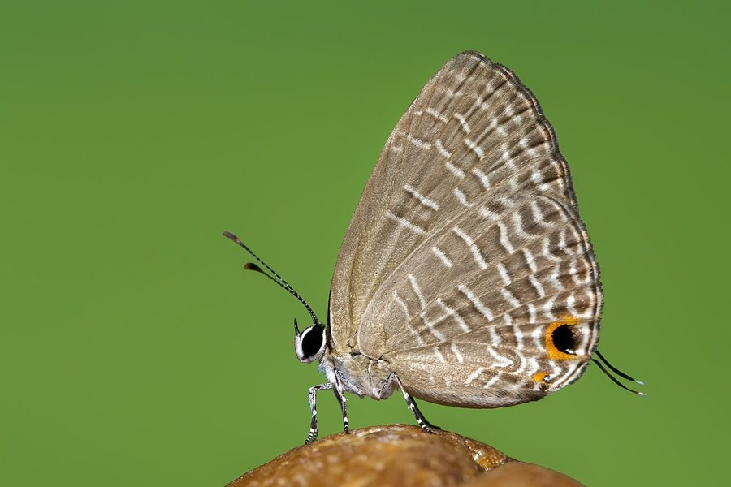

डार्क सेरूलियनDark Cerulean
Jamides bochus · Lycaenidae · INS-0258

- Scientific name वैज्ञानिक नाम
- Jamides bochus (Stoll, 1782)
- Family कुल
- Lycaenidae
- Hindi हिंदी
- डार्क सेरूलियन
- Local names स्थानीय नाम
- gahra cerulean, dark cerulean titli, neeli titli
- Status here यहाँ की स्थिति
- native
- Movement आवागमन
- Resident, here all year
- Known from कहाँ दर्ज
- Others have published records from the wider Awadh–Purvanchal plain, none yet from Basti–Ayodhya अवध–पूर्वांचल से दूसरों के प्रकाशित अभिलेख, बस्ती–अयोध्या से अभी नहीं
- IUCN IUCN
- not evaluated
- Review समीक्षा
- not yet reviewed
When to look कब देखें
Present all year. साल भर मौजूद।
Tell it apart from इनसे अलग पहचानें
डार्क सेरूलियन / Dark Cerulean
Jamides bochus (Stoll, 1782) — Lycaenidae
डार्क सेरूलियन — पूर्वी उत्तर प्रदेश के बागों, खेतों की मेड़ों और वन सीमाओं पर पाई जाने वाली अत्यंत तेज उड़ने वाली तितली। नर के पंखों की ऊपरी सतह पर चमकदार शाही कोबाल्ट-नीला रंग होता है जिसके चारों ओर चौड़ा काला किनारा रहता है। यह तितली दलहनी पौधों के फूलों और फलियों के आसपास तेजी से उड़ती है और नर तितलियां गीली मिट्टी पर झुंड बनाकर खनिज लवण चूसती हैं।
Quick Identification त्वरित पहचान
| Feature | Description |
|---|---|
| Wingspan | Small to medium among Indian blues |
| Male upperside | Glistening metallic cobalt-blue with broad jet-black outer margins |
| Female upperside | Fuscous brown with central metallic blue flush |
| Underside colour | Greyish brown crossed by neat pairs of wavy white lines |
| Hindwing tornus | Black eyespot broadly capped with bright orange and metallic turquoise scales |
| Tail | Fine, white-tipped filamentous tail on hindwing |
| Resting habit | Settles with wings closed upright, twitching hindwings to move false-head tails |
Field tip: Look along flowering pulse fields and sunny garden hedges from August to November. A small, extraordinarily fast-flying butterfly flashing metallic royal blue in flight, with paired wavy white lines and an orange-crowned black eyespot beneath, is the Dark Cerulean.
हिंदी — कैसे पहचानें: खेतों की मेड़ों पर बहुत तेजी से उड़ने वाली नीली तितली। पंख फैलाते ही गहरा कोबाल्ट-नीला रंग चमकता है और पंख बंद करने पर नीचे सफेद लहरदार धारियां और नारंगी-काला आंख जैसा धब्बा दिखता है।
Morphology आकारिकी
The male of Jamides bochus is one of the most vividly coloured blues in the region, exhibiting a rich, dark metallic violet-blue or royal cobalt on the upperside that shifts with the angle of light. The outer borders of the forewing are broadly jet-black, extending widest at the apex. Females present a very different appearance: the ground colour is dark brown, with iridescent blue scales occupying the basal half of the cell and discal spaces.
The underside is light earthy grey-brown, traversed by multiple pairs of delicate, sinuous white lines that run across both wings. Near the tornal angle of the hindwing sits a prominent velvety-black eyespot crowned with bright orange-ochre and dotted with sparkling metallic turquoise scales, situated right next to a slender black tail tipped with white.
The combination of the false-head eyespot and moving tails provides an effective diversion mechanism against hunting spiders and visual avian predators. The delicate white-ringed antennae and slender legs are typical of the tribe Polyommatini.
हिंदी: नर तितली के पंख ऊपर से बेहद गहरे और चमकीले नीले होते हैं जिनके किनारे काले होते हैं। मादा भूरे रंग की होती है। पंखों का निचला हिस्सा मटमैला होता है जिस पर दोहरी सफेद लकीरें और पूंछ के पास नारंगी घेरे वाला काला निशान होता है।
Behaviour & Ecology व्यवहार और पारिस्थितिकी
Jamides bochus is an active, sun-loving butterfly found around sunny shrubbery and woodland edges. Males fly with rapid, buzzing wingbeats, flashing their intense electric-blue colour in direct sunlight.
They frequently engage in mud-puddling, gathering in tight clusters on damp river sand, animal dung, and wet mud to absorb dissolved minerals and salts. Females remain closer to larval food plants, fluttering methodically through flowering bushes and vine tangles to locate tender flower buds.
When at rest, both sexes hold their wings closed upright, twitching their hindwings back and forth so that the filamentous tails mimic antennae, misdirecting predators away from the head. They roost communally under broad leaves during rainy spells.
In hot weather, males participate in large multi-species mud-puddling assemblages along riverbanks, absorbing sodium ions that are subsequently transferred to females during mating as a nuptial gift.
हिंदी: यह धूप में तेजी से उड़ने वाली तितली है। नर तितलियां नदी के किनारे या नालों की गीली मिट्टी पर बैठकर लवण चूसती हैं। बैठते समय यह अपने पिछले पंखों को हिलाती है जिससे पूंछ आगे के सिर जैसी दिखती है और शिकारी धोखा खा जाते हैं।
Life Cycle / Phenology जीवन चक्र
Females lay small, turban-shaped pale green eggs among the flower buds and young inflorescences of leguminous plants. The caterpillar is cylindrical, slightly flattened, and variable in colour from pale green to reddish brown with pale diagonal slashes.
The larva bores into flower buds and immature green pods, consuming developing ovules and flower parts. It is facultatively attended by ants of the genera Camponotus and Paratrechina.
Pupation takes place within a fallen pod, leaf litter, or crevice near the base of the food plant. The chrysalis is smooth, pale yellowish green with brown mottling, securely fastened with a delicate silk girdle.
Development is rapid during the warm post-monsoon period, with multiple overlapping generations produced annually and adults persisting through mild winter spells.
हिंदी: मादा तितली दाल वाली फसलों और जंगली फलियों के फूलों की कलियों पर अंडे देती है। इल्ली कोमल कलियों और फलियों के भीतर घुसकर दाने खाती है। प्यूपा जमीन पर गिरे पत्तों में बनता है और अनुकूल मौसम में एक महीने में नई तितली निकल आती है।
Host Plants or Prey आहार
Larvae feed on leguminous trees and shrubs of the family Fabaceae. Documented regional hosts include Palash (Butea monosperma), Indian Beech (Millettia pinnata, syn. Pongamia pinnata), and Pigeon Pea (Cajanus cajan), as well as wild legumes of the genera Crotalaria, Tephrosia, and Vigna (Wynter-Blyth 1957; Kehimkar 2008).
The caterpillars bore into young flower buds, open floral organs, and immature tender green pods, feeding on developing ovules.
Adults feed avidly on nectar from flowers of wild herbs and leguminous crops. Males frequently puddle on wet mud and damp sand along irrigation canals to absorb essential sodium salts.
हिंदी: इसकी इल्लियां पलाश, करंज और अरहर जैसी दलहनी वनस्पतियों की कलियों और फलियों को खाती हैं। वयस्क तितलियां छोटे जंगली फूलों का रस पीती हैं और नर तितलियां गीली जमीन पर बैठकर लवण चूसती हैं।
Predators / Natural Enemies शत्रु
Adults are hunted by insectivorous birds during open canopy and edge flights.
Crab spiders (family Thomisidae) frequently capture visiting adults on flower clusters, while praying mantises and assassin bugs ambush them at mud-puddling sites.
Dragonflies patrolling stream corridors capture adults on the wing as they cross open waterways. The moving tail filaments help direct predatory strikes away from the head towards the disposable wing margins.
हिंदी: शिकारी चिड़ियां, मेंटिस और मकड़ियां इस तितली का शिकार करती हैं। फूलों पर छिपकर बैठने वाली केकड़ा मकड़ियां इसे अचानक दबोच लेती हैं, जबकि पूंछ का झूठा सिरा इसे चिड़ियों के वार से बचाता है।
Agricultural / Human Relevance कृषि प्रासंगिकता
Because the caterpillars bore into the floral buds and pods of pulse crops such as Pigeon Pea (Cajanus cajan), localized feeding can occur in rural legume fields, though it rarely causes major economic outbreaks.
Across natural landscapes and agroforestry belts, adult butterflies serve as active pollinators of wild and cultivated leguminous plants.
Its pollination activities help sustain wild nitrogen-fixing flora that contribute to natural soil fertility across the Gangetic plain.
हिंदी: कभी-कभी अरहर की फलियों में इसकी इल्लियां छेद कर नुकसान पहुंचा सकती हैं, लेकिन यह बहुत गंभीर कीट नहीं है। इसके विपरीत, इसके वयस्क तितली रूप में दलहनी फूलों का परागण कर फसलों और पर्यावरण को फायदा पहुंचाते हैं।
Expected Locally स्थानीय रूप से अपेक्षित
Not a field record. Written from published accounts for eastern Uttar Pradesh. No confirmed local sighting yet — if you have seen it, that is what the atlas needs.
अभी तक स्थानीय पुष्टि नहीं। यह विवरण प्रकाशित स्रोतों से है, किसी अवलोकन से नहीं।
GBIF holds published records from the wider Awadh–Purvanchal plain, none yet from Basti–Ayodhya. In eastern Uttar Pradesh, Jamides bochus is expected around flowering pulse crops, canal-side shrubbery, village gardens, and open woodland verges throughout the post-monsoon months. A confirmed first record requires a clear photograph with place and date submitted through the project portal.
हिंदी: अवध के अरहर के खेतों, बागों और नहरों के किनारे यह तितली बरसात के बाद आसानी से देखी जा सकती है। स्थानीय स्तर पर पुष्टि के लिए इसके नीले पंखों की स्पष्ट तस्वीर तारीख सहित भेजें।
Distribution वितरण
Global range: Widespread across South and Southeast Asia from the Indian subcontinent through Indochina to Australia.
In India: Recorded throughout peninsular, central, and northern India (Varshney & Smetacek 2015).
In Uttar Pradesh: Present across the Gangetic plain in agricultural tracts, scrub jungles, and open woodlands.
In Basti district / eastern UP: Expected around flowering pulse fields, village gardens, and canal-bank scrub.
हिंदी: यह तितली पूरे भारतीय उपमहाद्वीप और दक्षिण-पूर्व एशिया में पाई जाती है। उत्तर प्रदेश के सभी मैदानी जिलों में खेतों और बागों के आसपास यह काफी आम है।
Research Questions शोध प्रश्न
- What proportion of seasonal pod damage in cultivated Cajanus cajan in Awadh is attributable to Jamides bochus versus other pod borers?
- How far do adults disperse from riparian corridors into surrounding agricultural fields during the dry season?
- Does the false-head hindwing twitching behaviour significantly reduce mortality from jumping spiders in field trials?
- How does soil moisture along irrigation canals influence local mud-puddling aggregation sizes?
- क्या यह तितली अवध में अरहर की फसल पर नियमित रूप से अंडे देती है?
- क्या जाड़ों के दिनों में इसके वयस्क धूप सेंकते हुए दिखाई देते हैं?
Similar Species मिलती-जुलती प्रजातियाँ
| Species | How to tell apart | हिंदी |
|---|---|---|
| Lampides boeticus | Possesses a pale yellowish underside with a prominent pale postdiscal band | निचला भाग पीलापन लिए धूसर, ऊपरी भाग हल्का बैंगनी-नीला |
| Prosotas nora | Much smaller size, with less intense blue upperside and broken, darker underside banding | आकार में काफी छोटा और निचले पंखों की पट्टियां अधिक टूटी-फूटी |
| Catochrysops strabo | Underside pale grey with a distinct costal spot on hindwing, and upperside pale violet-blue | निचला भाग हल्का धूसर और ऊपरी भाग हल्का बैंगनी-नीला |
Field rule: Recognised by the blazing cobalt-blue upperside of the male, paired wavy white lines below, and false-head orange-capped tornal eyespot.
हिंदी: नर तितली का गहरा चमकीला कोबाल्ट-नीला रंग और नीचे की दोहरी सफेद लहरदार धारियां इसे अन्य नीली तितलियों से अलग पहचान देती हैं।
Taxonomy & Classification वर्गीकरण
Original description. Described as Papilio bochus by Caspar Stoll in 1782 in Pieter Cramer's Uitlandsche Kapellen (vol. 4, pl. 391). It was subsequently established as the type species of the genus Jamides Hübner.
Subspecies. Nominate subspecies Jamides bochus bochus is widespread across the Indian subcontinent and Indo-Gangetic plain.
Family and order placement. Belongs to the lycaenid subfamily Polyommatinae (the blues), tribe Polyommatini. Members share delicate tails, spotted tornal eyespots, and leguminous host plants.
IUCN status rationale. Not evaluated globally by the IUCN Red List. It is an abundant and adaptable butterfly with no conservation threats.
हिंदी: इसका वैज्ञानिक विवरण 1782 में कैस्पर स्टोल द्वारा दिया गया था। यह लाइकेनिडे कुल की सदस्य है और प्रकृति में बहुत सुरक्षित है।
Photo Gallery फोटो गैलरी
No photos yet — add field photos to media/species/dark_cerulean/ and run node scripts/sync_photos.js.
Photos needed आवश्यक फोटो
- [ ] Basking male showing intense metallic royal blue upperside (चमकीले नीले पंख फैलाए नर)
- [ ] Underside pattern showing paired wavy white lines and orange-crowned eyespot (पंखों के नीचे की सफेद लकीरें और नारंगी धब्बा)
- [ ] Mud-puddling male on wet stream sand (गीली मिट्टी पर बैठा नर)
References संदर्भ
- Stoll, C. (1782). In: Cramer, P., Uitlandsche Kapellen, 4, pl. 391.
- Bingham, C. T. (1907). Fauna of British India, Butterflies, vol. 2. Taylor and Francis, London.
- Wynter-Blyth, M. A. (1957). Butterflies of the Indian Region. Bombay Natural History Society, Bombay.
- Kehimkar, I. (2008). The Book of Indian Butterflies. Bombay Natural History Society, Oxford University Press, Mumbai.
- Varshney, R. K. & Smetacek, P. (2015). A Synoptic Catalogue of the Butterflies of India. Butterfly Research Centre, Bhimtal.
- GBIF Occurrence Data — Jamides bochus, India (2025).
Source file: species/fauna/insects/dark_cerulean.md